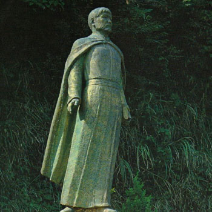

Isusovački blaženici
Svećenik · Misionar · Mučenik
Bl. Peter Kasui Kibe
1587.–1639.
Peter Kasui Kibe zbog svećeničkoga poziva putovao je iz Japana do Rima. Kao isusovac vratio se progonjenim kršćanima i ondje završio mučeničkom smrću.
Tekst je preveden i prilagođen uz pomoć umjetne inteligencije.

Izvor slike
- Spomendan
- 4. srpnja
- Zaštitništvo
- Nije navedeno u izvoru
- Životni vijek
- 1587.–1639.
- Datum smrti
- 4. srpnja 1639.
U kalendaru zbirke koristi se dan smrti. Taj datum nije zasebna potvrda liturgijskoga spomendana.
Životopis
Peter Kasui Kibe iz japanske pokrajine Bungo dugo je pomagao svećenicima kao katehist. Nakon protjerivanja misionara 1614. otišao je u Macao. Želeći ređenje, preko Indije i Jeruzalema stigao je do Rima 1620. Ondje je zaređen, a ubrzo potom primljen u isusovački novicijat. Put do Rima trajao je tri godine.
U Japan se vratio 1630. Devet je godina potajno služio vjernicima, sve dok ga jedan kršćanin nije izdao vlastima. Odveden je u Edo, zatočen i mučen. Nakon vješanja naglavce ubijen je kopljem 4. srpnja 1639. Njegov dug put ostao je obilježen željom za služenjem vlastitomu narodu.
Tekst je preveden i prilagođen uz pomoć umjetne inteligencije.